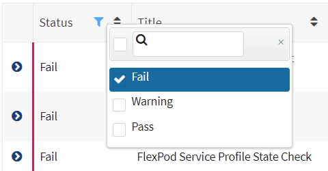
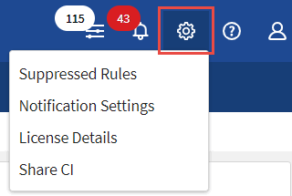

Notes de mise à jour
Notes de mise à jour
Le contrôle de l’infrastructure convergée
 Suggérer des modifications
Suggérer des modifications
Vous pouvez surveiller votre infrastructure convergée en répondant aux alertes, en vérifiant l’historique des modifications et en générant des rapports qui procurent une vue globale sur l’infrastructure.
Vérification des alertes en cas d’échec des règles et des avertissements
Converged Systems Advisor surveille en permanence votre infrastructure et génère des avertissements et des défaillances pour s’assurer que le système est configuré et qu’il fonctionne au mieux.
-
Connectez-vous au "Portail Converged Systems Advisor" Et cliquez sur règles.
La page règles affiche un résumé de toutes les règles. L’état de chaque règle est soit Pass, Warning, soit Fail.
-
Cliquez sur l’icône de filtre dans la colonne État et sélectionnez Fail, Warning ou les deux.

-
Pour plus de détails sur les règles individuelles, cliquez sur la flèche en regard de la colonne État.

-
Suivez les instructions de résolution pour résoudre le problème.
Si besoin, passez en revue l’historique de la configuration pour que l’infrastructure vous aide à résoudre le problème.
Le statut des règles que vous avez abordées doit s’afficher en tant que réussite après la prochaine période de collecte de l’agent.
Résolution des règles ayant échoué
Converged Systems Advisor permet de résoudre certains échecs de règles en corrigeant le problème sous-jacent avec l’infrastructure convergée.
-
Vous devez disposer de la licence Premium.
-
Vous devez être désigné en tant que propriétaire de l’infrastructure convergée.
-
Connectez-vous au "Portail Converged Systems Advisor" Et cliquez sur règles.
La page règles affiche un résumé de toutes les règles. L’état de chaque règle est soit Pass, Warning, soit Fail.
-
Sélectionnez Filtrer les règles pouvant être corrigées.
-
Développez la règle à résoudre.
-
Cliquez sur
 dans le coin supérieur droit de la règle développée.
dans le coin supérieur droit de la règle développée.Si l’icône est désactivée, soit parce que l’agent est hors ligne, vous ne disposez pas des privilèges du propriétaire, soit parce que vous n’avez pas de licence Premium.
-
Si nécessaire, remplissez les valeurs d’entrée.
En fonction de la règle défaillante, certaines valeurs d’entrée sont nécessaires pour résoudre le problème.
-
Si vous souhaitez qu’une collecte de données soit effectuée après la fin de la correction, sélectionnez l’option collecter lorsque le travail de correction est terminé.
-
Cliquez sur Exécuter la correction.
-
Cliquez sur confirmer.
-
Pour afficher les actions en cours de résolution des règles ayant échoué, cliquez sur l’icône opérations et sélectionnez action de correction.

Suppression des règles ayant échoué
Converged Systems Advisor vous permet de supprimer des règles. Ainsi, vous n’affichez pas le tableau de bord et n’envoyez plus de notifications par e-mail en cas d’échec des règles.
Par exemple, l’activation de telnet n’est pas recommandée, mais si vous préférez l’activer, vous pouvez supprimer la règle.
Vous devez disposer de la licence Premium pour configurer les notifications.
-
Dans le tableau de bord, cliquez sur règles.
-
Trouvez les règles que vous recherchez en filtrant le contenu de la table.
-
Sélectionnez une ou plusieurs lignes pour les règles dont le statut Avertissement ou échec est défini sur Avertissement, puis cliquez sur l’icône alertes.

-
Sélectionnez une durée, puis cliquez sur Envoyer.

|
Si vous souhaitez activer les alertes, suivez les mêmes étapes et sélectionnez End Suppression. |
Converged Systems Advisor ne vous informe plus de la règle pendant la durée spécifiée et la règle ne sera plus visible dans le tableau de bord.
Affichage des règles supprimées
Vous pouvez afficher la liste des règles qui ont été supprimées et, si vous le souhaitez, sélectionner pour mettre fin à la suppression.
-
Cliquez sur l’icône Paramètres et sélectionnez règles supprimées.

-
Sélectionnez les règles supprimées que vous souhaitez afficher.
-
Cliquez sur l’icône alertes.
-
Sélectionnez End Suppression, puis cliquez sur Submit.
Les alertes sont activées pour la règle sélectionnée et la règle est affichée dans le tableau de bord et le tableau de bord règles.
Révision de l’historique d’une infrastructure
Lorsque vous recevez une alerte concernant une règle ayant échoué, vous pouvez afficher un historique de ce qui a été modifié dans la configuration pour vous aider à résoudre le problème.
-
Sélectionnez une infrastructure convergée.
-
Cliquez sur plus > Historique.

-
Cliquez sur un jour du calendrier pour afficher le nombre d’avertissements et d’échecs identifiés lors de chaque collecte de données.
Le nombre qui s’affiche pour chaque jour correspond au nombre de fois que l’agent a collecté des données. Par exemple, si vous conservez l’intervalle de collecte par défaut de 24 heures, vous devriez voir une collection par jour. L’image suivante montre une seule collection le 27 du mois.

-
Pour afficher plus de détails sur les données collectées, cliquez sur accéder au tableau de bord ci pour une collection.
-
Si nécessaire, affichez l’historique pour la dernière fois qu’aucun avertissement ou échec n’a été identifié.
La comparaison des données entre les deux périodes de collecte peut vous aider à identifier ce qui a changé.
Génération de rapports
Si vous disposez d’une licence Premium, vous pouvez générer plusieurs types de rapports qui fournissent des informations sur l’état actuel de votre infrastructure convergée : rapport d’inventaire, rapport d’état, rapport d’évaluation, etc.
-
Cliquez sur Rapports.
-
Sélectionnez un rapport et cliquez sur générer.
-
Choisissez vos options pour le rapport :
-
Sélectionnez une infrastructure convergée.
-
Vous pouvez éventuellement passer de la collecte de données la plus récente à une collecte précédente.
-
Choisissez comment vous souhaitez afficher le rapport : dans votre navigateur, au format PDF téléchargé ou par e-mail.

-
Converged Systems Advisor génère le rapport.
Suivi des contrats de support
Vous pouvez ajouter des détails sur les contrats d’assistance pour chaque périphérique dans une configuration : date de début, date de fin et ID de contrat. Cela vous permet de suivre facilement les détails dans un emplacement central afin de savoir quand renouveler les contrats de support pour chaque appareil.
-
Cliquez sur Sélectionner un EC et sélectionnez l’infrastructure convergée.
-
Dans le widget Contrat de support, cliquez sur l’icône Modifier contrat.
-
Sélectionnez Date de début et Date de fin et saisissez ID du contrat.
-
Cliquez sur soumettre.
-
Répétez les étapes pour chaque périphérique de la configuration.
Converged Systems Advisor affiche désormais les détails du contrat de support pour chaque appareil. Vous pouvez facilement voir quels périphériques ont des contrats de support actifs et expirés.